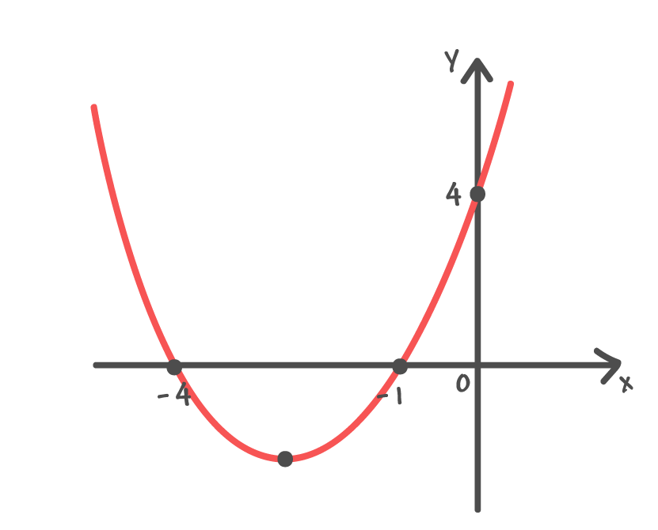

Conceito
Função quadrática é caracterizada por uma função R->R adotando o seguinte formato: f(x)=ax²+bx+c onde a≠0.
Zeros da função
Zeros ou raízes da função são os pontos onde f(x)=0 portanto para calculá-los basta igualar a expressão a 0.
Gráfico
Uma função pode ser representada graficamente onde os pontos cartesianos representam (x,y),e no caso da função quadrática é carcterizado por uma parábola. Veja no exemplo a seguir:
Para montá-lo,primeiro temos que saber se a concavidade da parábola e para cima ou para baixo.Caso a > 0, a concavidade é para cima e, portanto tem um valor mínimo caso a < 0,a convidade é para baixo e portanto tem um valor máximo.

Após isso calcula-se os zeros da função e marque os zeros no gráfico,logo após isso marque no eixo y o ponto equivalente ao valor de "c".
Depois deve-se calcular o vértice da função(valor mínimo ou máximo) para calcular o vértice eixo x tem-se a seguinte fórmula: xv=-b/2ae o vértice de y yv=-Δ/4a.Logo após isso marca-se o ponto cartesiano (xv,yv).
Após tudo isso basta ligar os pontos marcados,formando uma parábola.